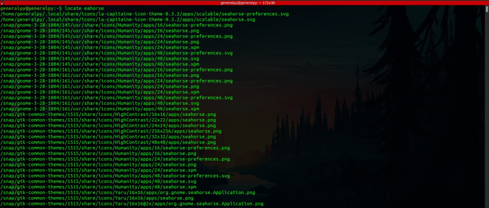

Finding files and dirs
locate command is used to search for files and directories in Linux. Since files hold an important place in linux world, locate command is very important to learn.
locate is a very old command which sometimes is not located in Ubuntu by default and can be installed using sudo apt get mlocate.
mlocate is new version of locate command which is generally used nowadays though locate is faster.
locate is very straightforward to use, just write locate and then write name of file or directory you are searching for.
locate <name_of_file_or_dir>
Here we can see that locate returned path to files which also contained eahorse in their path name not in file itself. This is because locate is run by default with -w or --wholename flag which returns any path whose string matched with provided string thus also returning paths which contained string as as directory name only.
We can remove this behaviour by using -b which will only return results where final name(basename) matches with query string instead of anything in path name.
locate adds * before and after the argument string implicitly thus returning those paths also where exact match is not found(like seahorse instead of eahorse).
We can remove this behaviour by adding quotation marks around string and prepending a \(backslash) to the string.
locate root == locate *root*
locate '\root' : Will only return exact matches

How locate works : Locate works by managing a database of paths. Locate has a database which contains whole system's paths and that database must be updated on a daily basis by using updatedb command as sudo. This database is used by locate to search for files. This database technique is fast but that also comes with a tradeoff that realtime paths cannot be shown, when we create or delete files , it will not be reflected in locate until database is updated.
Locate's database is stored in /var/lib/mlocate. Database stats can be seen by using -S flag with locate.
Below image shows how we have to update database when using locate and changes are made in filesystem.
locate provides a -e flag which can check if a file exists or not even if db is not updated.
We used -e to check if file exist or not without updating the db.
-i flag is used to ignore cases while searching and -r flag can be used to match using regex.
which command returns the absolute path of any command present in linux world. By defualt it will only return first match but we can bypass that by using -a flag.
Find
We discovered 2 problems with locate, it searches using database, thus we have to update database frequently and second is that we dont have many options.
These problems are solved by the newer and better find command.
Find searches in realtime and has a lot of options like search by size, permissions, users, groups etc.
Syntax of find is :
find where_to_search search_expression_with_optionsThere are many options in find command. Some of them are :-
-name : Search for name. Case sensitive. Wildcards not enabled by default but can be used, try to enclose query string between quotes when using wildcards
Above find command means find in current directory where name = report.txt
-iname : Search for name but case incensitive. Wild cards can be used
-delete : Used to delete items permanently which appear in find result. Dangerous, use carefully.
Note that find will give permission denied error for files and dirs it cannot access. Use sudo to bypass that.
-ls : Run ls command on dirs where find is successful.

-type : Finds files and dirs of a given type.
Below command finds all items of type directory. We can use type letter(those appear at very first in ls commands type and permissions) to search for corresponding files.
Above command lists every directory present in etc which is extremely inefficient so we use -maxdepth flag followed by depth we want to search. (Depth means number of subdirectories we want to encounter).
maxdepth can also be used with other options in find.
Difference between simple find and find with maxdepth
-perm : Find items with given permissions. More on permissions later.
-size : Finds items with given size(more than, less than, equal to provided size).
We use + to denote greater than and - to denote less than. EG +100M is size greater than 100 MB , -100M means size less than 100M and no sign means equal to.
Here we have sizes displayed differently in ls. It is because ls denotes file sizes in units of 1024 and 100M in units of 1000s.
-mtime,-ctime,-atime : Finds items acc to mtime , ctime and atime . After this option we give argument as number of days or how many 24 hrs have passed till the times of file or dir have changed. For example -mtime 0 means find will find all files which were modified in last 24 hours or today.
Fractional parts are ignored. It means if we pass 0 as argument to mtime, any file modified in last 12 will also be listed.
+ and - signs apply to this also.
-mmin, -amin, -cmin : Finds files according to mins instead of days.
Find all files that were modified in last 60 minutes.
-user and -group : To find files owned or not owned by any user or group. Use -not before group or user to find not owned files.
-exec : Used to execute a command over items which were found by find command. Syntax of exec is :
find ...expression... -exec command \;
exec commands end with \;.
Here to access values returned by find we use {}.
For example to cat all files which were modified in last hour, syntax will be :
find . -type f -mmin -60 -exec cat {} \;
-ok : Just like exec but works interactively. It asks you before executing every command.